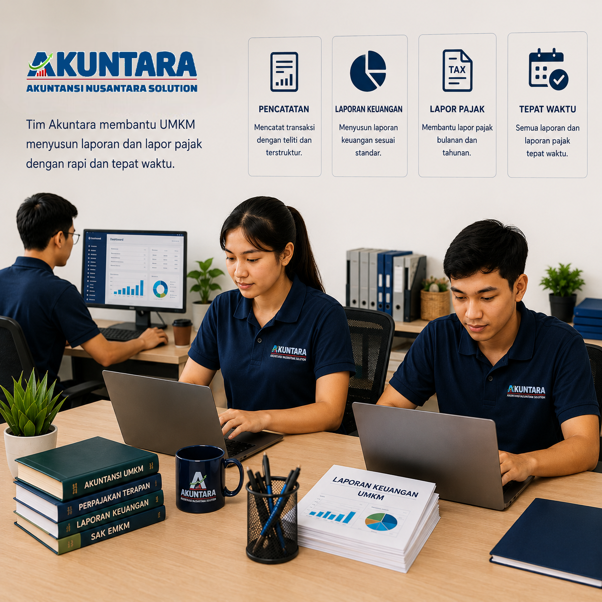
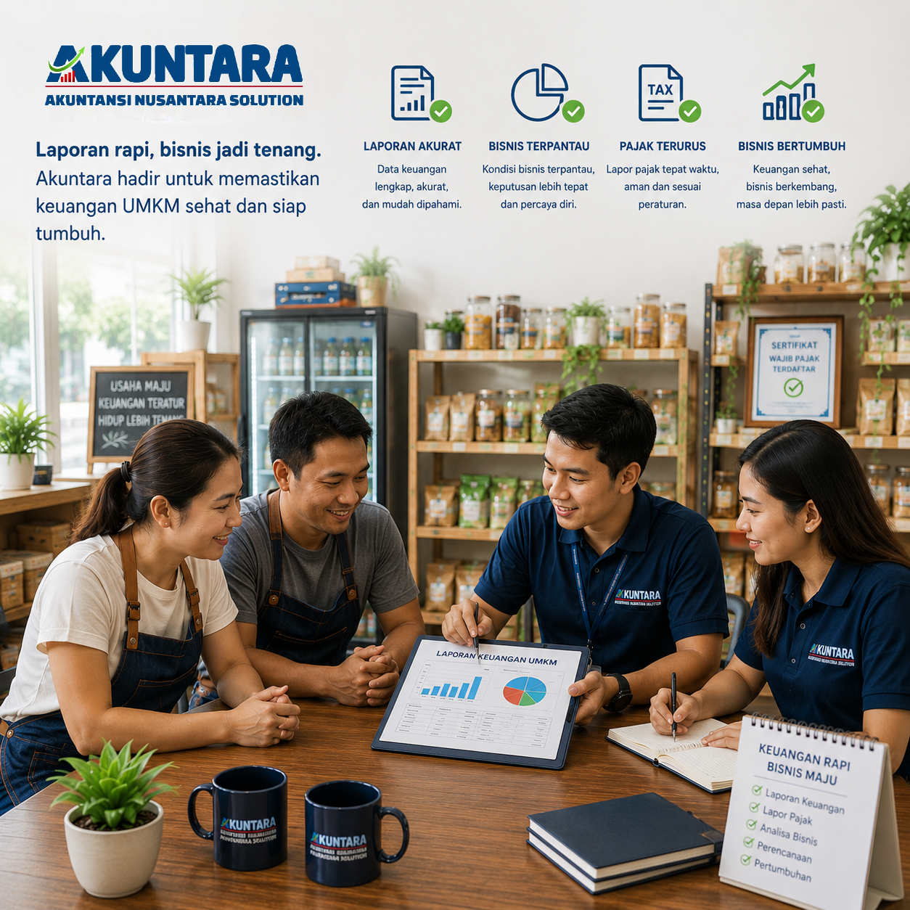
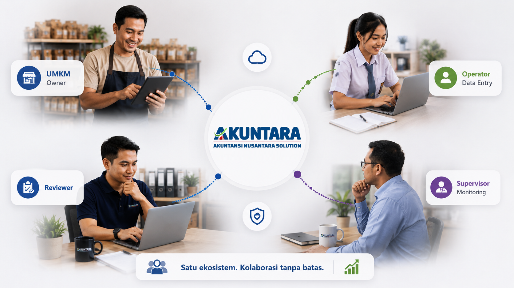
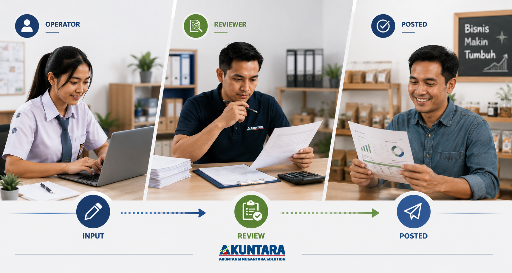
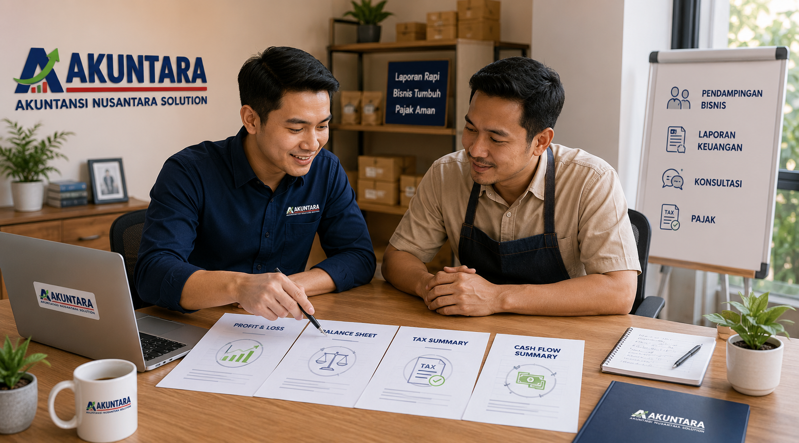
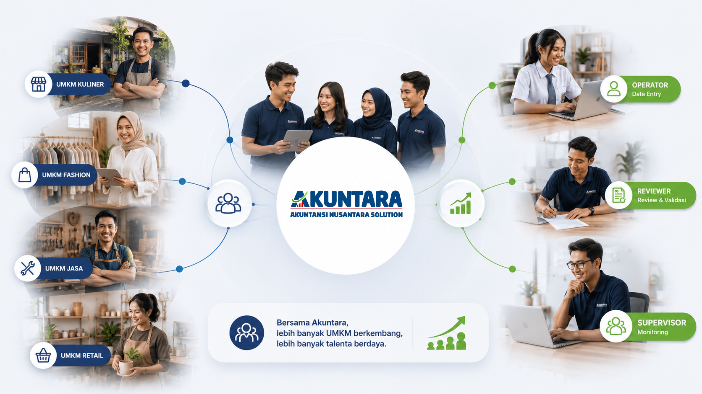
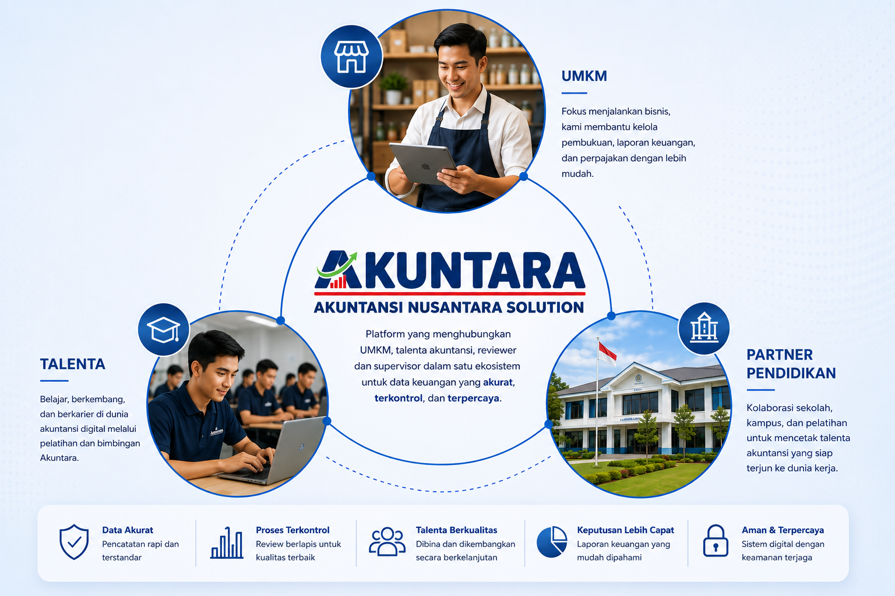

Ekosistem Terpercaya Pengelolaan Keuangan UMKM Indonesia
Akuntara menghubungkan teknologi, talenta akuntansi, reviewer, supervisor, dan institusi pendidikan untuk membantu UMKM tumbuh dengan data keuangan yang lebih tertib dan dapat dipercaya.
Banyak bisnis bertumbuh lebih cepat daripada sistem keuangannya.
Akuntara hadir sebagai partner jangka panjang agar pemilik usaha tidak hanya mencatat transaksi, tetapi membangun fondasi keuangan yang siap mendukung keputusan, pajak, dan pertumbuhan.


Transaksi tercatat terlambat, tersebar, atau belum mengikuti standar.
Pemilik usaha tidak punya angka yang cukup kuat untuk membaca kondisi bisnis.
Data transaksi masuk ke alur kerja yang melibatkan operator, reviewer, dan supervisor.
Dokumen dan kewajiban pajak belum tersusun sejak awal.
Bisnis lebih mudah kehilangan bukti, salah klasifikasi, atau terlambat menyiapkan data.
Tim membantu menyusun dokumen dan kebutuhan pajak sebagai bagian dari perjalanan bisnis.
Merekrut tim penuh sering terlalu mahal untuk bisnis yang sedang bertahap.
Pemilik atau admin operasional akhirnya merangkap pekerjaan pencatatan yang membutuhkan ketelitian.
Talenta akuntansi didampingi reviewer dan supervisor agar kualitas tetap terjaga.
Technology + Accounting Talent + Quality Control.
Akuntara bukan sekadar software dan bukan sekadar outsourcing akuntansi. Akuntara membangun ekosistem kerja yang mempertemukan UMKM, talenta akuntansi, reviewer, supervisor, dan mitra pendidikan dalam satu standar layanan.
Teknologi sebagai fondasi
Dokumen, transaksi, dan laporan dikelola dalam alur digital yang memudahkan kolaborasi dan kontrol.
Talenta akuntansi yang bertumbuh
Operator bukan bekerja sendirian; mereka dikembangkan melalui pelatihan, SOP, dan pengalaman kerja nyata.
Review berlapis sebelum dipercaya
Reviewer dan supervisor menjaga kualitas agar laporan lebih siap digunakan pemilik bisnis.
Teknologi membantu ekosistem bekerja lebih rapi, bukan menggantikan manusia.
Platform Akuntara dirancang untuk membuat kolaborasi antara UMKM, talent, reviewer, dan supervisor berjalan lebih transparan, terukur, dan mudah dikembangkan.
Semua pihak dapat bekerja bersama.
UMKM, talent, reviewer, dan supervisor memiliki ruang kerja yang sama sehingga data lebih mudah dilihat, dibahas, dan ditindaklanjuti.

Semua data diperiksa.
Setiap transaksi dan dokumen masuk ke alur review agar laporan tidak langsung digunakan sebelum melewati kontrol kualitas.

Menjadi laporan yang bermanfaat.
Data yang sudah rapi diolah menjadi ringkasan dan laporan yang membantu pemilik bisnis membaca kondisi keuangan dengan lebih jelas.

Ekosistem dapat berkembang.
Alur kerja yang terstruktur membuat Akuntara siap mendukung lebih banyak UMKM, talent, reviewer, supervisor, dan partner pendidikan.

Data bisnis tetap aman.
Akses, proses, dan penyimpanan data dirancang agar informasi bisnis tetap terlindungi sepanjang proses kerja.
Dari diskusi awal sampai laporan, setiap tahap punya peran dan kontrol.
Diskusi Kebutuhan
Kami memahami perjalanan usaha, volume transaksi, dan kondisi pencatatan saat ini.
Onboarding
Dokumen, akun, format data, dan ritme kerja disiapkan bersama agar proses berjalan jelas.
Pencatatan
Talenta akuntansi membantu memasukkan dan merapikan data transaksi secara berkala.
Review
Reviewer dan supervisor memeriksa konsistensi data sebelum laporan digunakan.
Pelaporan
UMKM menerima laporan yang lebih siap dipakai untuk keputusan, pajak, dan pertumbuhan.
Ekosistem Akuntara menghubungkan UMKM, talent, partner pendidikan, dan quality control.
Setiap peran terhubung dalam satu standar layanan agar proses keuangan UMKM lebih tertib, berkembang, dan dapat dipercaya.

Dibangun bersama partner pendidikan dan komunitas.
Akuntara percaya ekosistem yang kuat tidak dibangun sendiri. Sekolah, kampus, komunitas, dan mitra pelatihan menjadi bagian dari jalan panjang menyiapkan talenta akuntansi yang relevan dengan UMKM.
Jalin Kemitraan PendidikanProgram magang, praktik kerja, dan pengembangan talenta akuntansi digital.
Penguatan kompetensi accounting digital melalui materi praktis.
Kolaborasi edukasi, talent pool, dan pengembangan jejaring.
Jalur pengalaman kerja nyata dengan proses verifikasi dan mentoring.
Materi praktik yang dekat dengan kebutuhan pembukuan UMKM.
Pemetaan dan pengembangan calon operator, reviewer, dan supervisor.
Lebih dari laporan keuangan: ekosistem yang tumbuh bersama.
Akuntara ingin menjadi ruang kolaborasi jangka panjang tempat UMKM bertumbuh, talenta berkembang, dan pendidikan akuntansi semakin dekat dengan kebutuhan nyata.
Membantu bisnis kecil memiliki fondasi keuangan yang lebih siap untuk bertumbuh.
Memberi ruang belajar kerja nyata bagi siswa, alumni, dan junior accountant.
Menghubungkan materi akuntansi dengan praktik dan kebutuhan UMKM Indonesia.
Siap membangun fondasi keuangan bisnis bersama ekosistem Akuntara?
Mulai dari percakapan sederhana tentang kebutuhan, tantangan, dan arah pertumbuhan usaha Anda.